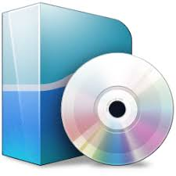

Desarrollo Web y Aplicaciones
Una buena solución digital, como un sitio web, no sólo ha de resolver el problema del usuario final, sino que también apoyará los objetivos de tu empresa y proporcionará una experiencia que mejorará la vida de las personas. En WorkIT aportamos ideas basadas en el expertise de los resultados y aseguramos que el estilo y el contenido de la solución estén alineados con el resultado final deseado Sólo planteamos soluciones basadas en una óptima experiencia de usuario (UX) resueltas con un diseño gráfico innovador, profesional y sugerente, desarrolladas bajo la tecnología de programación que mejor se ajuste a los objetivos planteados. A partir de un briefing exhaustivo, elaboraremos un esquema del sitio basado en intuitivos wireframes que contemplen los fundamentos clave de un buen diseño de interfaz (UI) y diseño de interacción (IxD) Desde aquí, trabajaremos juntos en una comunicación profesional, sugerente y directa orientada a recibir tráfico cualificado que genere conversiones de calidad para tu negocio. .
Redes e Infraestructura
Disponer de una red y sistemas de comunicación fiables, seguros y flexibles es básico para un buen desarrollo de negocio. Le ayudaremos a optimizar y unificar su infraestructura y servicios de comunicaciones para reducir costes y mejorar la productividad. Somos especialistas en redes cableadas, redes wi-fi y conectividad para el datacenter. Podemos ofrecerle las soluciones más avanzadas del mercado para integrar y simplificar la gestión de sus redes y comunicaciones..
Seguridad Informática
Seguridad informática de redes con sistemas de firewalls para mantener segura, íntegra y protegida la infraestructura de tu empresa, Realizamos profundas auditorias de seguridad informática, riesgos informáticos e implantación de medidas correctivas y preventivas, Diseñamos sistemas de redes WiFi de calidad, con seguridad informática de accesos y monitorización del entorno.
Software y Licencias de Terceros
Hoy en día, los usuarios de las organizaciones utilizan software durante su trabajo cotidiano: sistema operativo de PC (Windows 7, etc.), software de ofimática (Office, etc.), sistema operativo de servidor (Windows Server, etc.), etc. Cada fabricante, dispone de diferentes modalidades de licenciamiento adaptables a cada tipo de empresa o institución. Para hacer una buena inversión en el momento de adquirir licencias, resulta imprescindible el asesoramiento personalizado de consultores especializados tanto en licenciamiento como en tecnología, que lo orienten en la decisión de qué producto comprar y cuál es el mejor modo de licenciarlo. Optimización de licencias.- Es posible ayudar a nuestros clientes a tomar decisiones inteligentes sobre licencias basándonos en las necesidades actuales y previstas de sus organizaciones. Ofrecemos precios atractivos, opciones de coste previsibles y una serie de beneficios con valor añadido que permiten reducir el coste de la adquisición, mantenimiento y actualización de licencias de software..